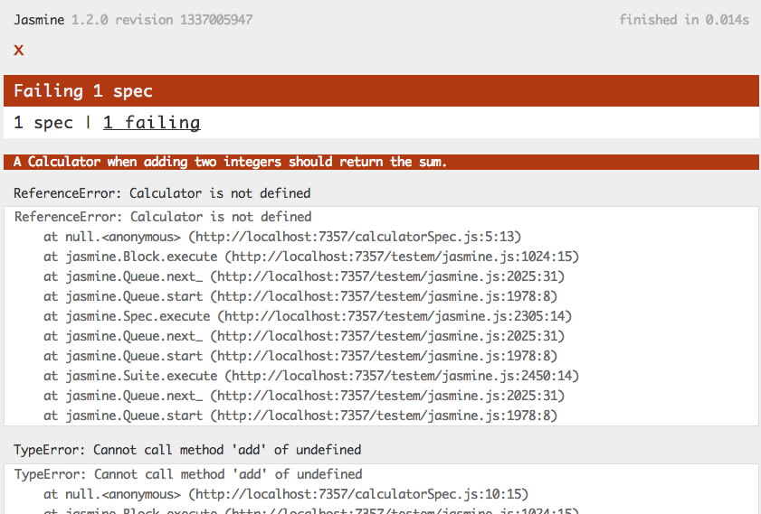
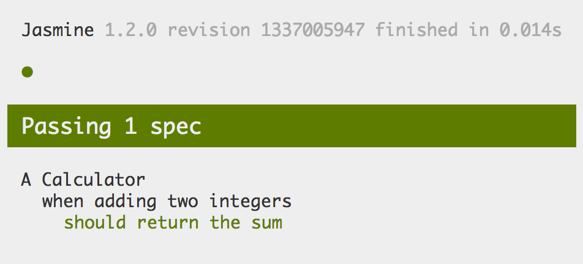

BDD with
Jasmine
by Han Xiao
What is BDD?
- Behavior driven development
- Based on TDD
- Not change test flow
- Another way to write Unit Test

Writing Test by Scenario
The unit test way
public class TestCalculator {
private Calculator cal;
@Before
public void setUp() {
Calculator cal = new Calculator();
}
@Test
public void testAddIntegers() {
assertEquals(3, cal.add(1, 2));
}
}
Lets BDD!
write a test spec file calculatorSpec.js
describe("A Calculator", function() {
var cal;
beforeEach(function() {
cal = new Calculator();
});
describe("when adding two integers", function() {
it("should return the sum", function() {
expect(cal.add(1, 2)).toEqual(3);
});
})
})
How to use
<head>
<script src="jasmine.js"></script>
<script src="jasmine-html.js"></script>
<script>
(function() {
var jasmineEnv = jasmine.getEnv()
jasmineEnv.addReporter(new jasmine.HtmlReporter)
window.onload = function() {
jasmineEnv.execute()
};
})();
</script>
<script src="calculatorSpec.js"></script>
<link rel="stylesheet" href="jasmine.css">
</head>
Watch it fail
Write the code
implement code in calculator.js
function Calculator() {
this.add = function(a, b) {
return a + b;
}
}
add it to html
<head>
<script src="calculator.js"></script>
</head>
See it pass!
More matchers
expect(a).toBe(b);
expect(a).not.toBe(null);
expect(a.foo).toBeDefined();
expect(a.bar).toBeUndefined();
expect(bar).toThrow();
expect(foo).not.toThrow();
Test with jQuery
Use jasmine-jquery
loadFixtures('index.html');
expect($('#some-id')).toBeVisible();
expect($('#some-id')).toBeHidden();
expect($('#some-id')).toHaveClass("in");
expect($('#some-id')).not.toHaveClass("error");
expect($('#some-id')).toBeDisabled();
expect($('#some-id')).toBeFocused();
Reference
- Behavior-driven development
- Official Jasmine Document
- QUnit: unit test framework for javascript
- jasmine-jquery on Github